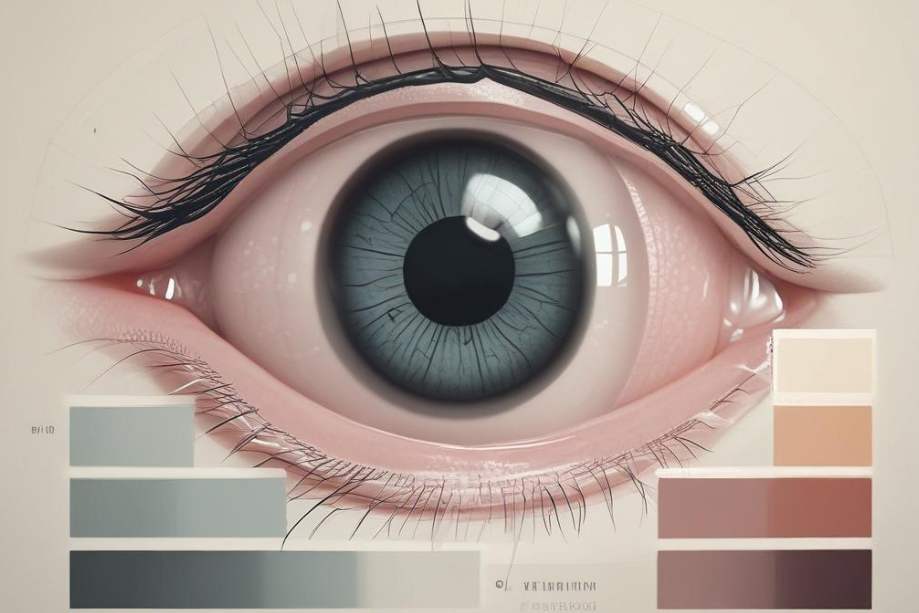

Understanding Diabetic Retinopathy
November 28, 2024
Diabetic retinopathy is a serious eye condition that affects millions of people worldwide, yet many remain unaware of its potential impact on vision. Understanding the causes of diabetic retinopathy is crucial for anyone living with diabetes, as high blood sugar levels can lead to damage in the retina over time. By exploring these causes, we can better grasp how they contribute to gradual, often unnoticed vision loss, highlighting the importance of early detection and proactive management.
In this blog post, we will dive into the effects of diabetic retinopathy on both eye health and overall well-being, emphasizing the interconnectedness of these aspects. Furthermore, we will discuss practical strategies to safeguard your vision through prevention and effective management. Whether you’re newly diagnosed or have been living with diabetes for years, arming yourself with knowledge about diabetic retinopathy is essential for preserving your eyesight and maintaining a healthy lifestyle.
Explore the causes of diabetic retinopathy and their impact on your vision
Diabetic retinopathy occurs when high blood sugar levels damage the blood vessels in the retina, the light-sensitive tissue at the back of your eye. Over time, poor blood sugar control leads to the leakage of fluid and the proliferation of abnormal blood vessels, which can severely affect your vision. Key risk factors include duration of diabetes, hypertension, and high cholesterol levels. As these conditions elevate stress on the retinal blood vessels, they become increasingly susceptible to damage. Maintaining stable blood sugar levels is vital in mitigating these harmful effects and preserving your eyesight.
Understanding the causes of diabetic retinopathy is crucial for prevention. By addressing the contributing factors—such as poor dietary choices, sedentary lifestyle, and irregular check-ups—you can significantly reduce your risk. Regular eye examinations allow for early detection, which plays a pivotal role in treatment and management. If you notice any changes in your vision, such as blurred sight or difficulty focusing, it is essential to consult an eye care professional promptly. Staying proactive in your eye health can dramatically impact the progression of diabetic retinopathy and help safeguard your vision.
Effects of diabetic retinopathy on eye health and overall well-being
Diabetic retinopathy significantly impacts eye health as it leads to various vision problems. The condition occurs when high blood sugar levels damage the blood vessels in the retina, which can cause them to leak or become blocked. This damage can lead to symptoms such as blurred vision, dark spots, and, in severe cases, complete vision loss. Individuals may experience difficulty in recognizing faces or reading, which can create obstacles in daily activities and affect overall quality of life. Recognizing these symptoms early is essential to prevent permanent damage and preserve sight.
Moreover, the effects of diabetic retinopathy extend beyond just visual impairment; they can also impact emotional and mental well-being. Individuals struggling with vision loss from diabetic retinopathy may experience feelings of anxiety, depression, or isolation. The inability to perform tasks that were once simple can lead to a loss of independence, highlighting the importance of managing diabetes effectively to prevent such complications. By understanding the major repercussions of this condition, people can take proactive steps towards maintaining their vision and overall health.
Safeguarding your vision: prevention and management of diabetic retinopathy
Preventing diabetic retinopathy starts with effective management of diabetes. Individuals should maintain their blood sugar, blood pressure, and cholesterol levels within recommended ranges. Regular exercise, a balanced diet, and consistent monitoring of blood glucose levels are crucial strategies. Regular eye examinations can help detect any changes in the retina early on, allowing for timely intervention. It’s essential to communicate openly with healthcare providers about any vision changes, symptoms, or concerns, as early detection can significantly alter the course of the disease and help preserve vision.
In addition to lifestyle changes, several treatments exist to manage diabetic retinopathy effectively. Laser treatment can target abnormal blood vessels and slow disease progression. Injections of medication into the eye may help reduce inflammation and prevent swelling in the retina. In advanced cases, surgical options like vitrectomy may be necessary to remove blood or scar tissue from the eye. By combining proper diabetes management with medical treatments, individuals can safeguard their vision from the debilitating effects of diabetic retinopathy, ensuring a better quality of life overall.